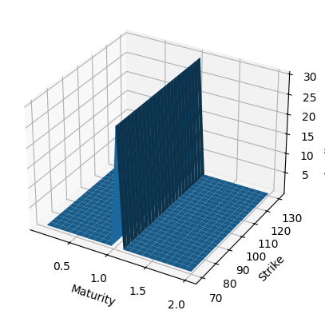

Sphinx Tips¶
Sphinx directives
https://www.sphinx-doc.org/ja/master/usage/restructuredtext/directives.html
githubpagesで利用可能とするためには
# Minimal makefile for Sphinx documentation # # You can set these variables from the command line, and also # from the environment for the first two. SPHINXOPTS ?= SPHINXBUILD ?= sphinx-build SOURCEDIR = . BUILDDIR = ../docs#_build # Put it first so that "make" without argument is like "make help". help: @$(SPHINXBUILD) -M help "$(SOURCEDIR)" "$(BUILDDIR)" $(SPHINXOPTS) $(O) .PHONY: help Makefile # Catch-all target: route all unknown targets to Sphinx using the new # "make mode" option. $(O) is meant as a shortcut for $(SPHINXOPTS). # $(SPHINXBUILD) -b html $(ALLSPHINXOPTS) $(BUILDDIR)/ %: Makefile # @$(SPHINXBUILD) -b $@ "$(SOURCEDIR)" "$(BUILDDIR)" $(SPHINXOPTS) $(O) sphinx-autobuild -b $@ "$(SOURCEDIR)" "$(BUILDDIR)" $(SPHINXOPTS) $(O) --host 0.0.0.0 --port 8000Pandocコマンド
コンテナを作成して、build, srcなどはvolumeとしておいておく
srcだけはvolumeでマウントさせておく? githubでコミットするsrc…などはおいておきたいし.. makeもおいておきたい。https://qiita.com/supaiku2452/items/5d6e78d10094f64d269f が参考になるかも。テストでは例えば、graphvizをホストマシンからアンインストールして、そのあと、
rstでは#を用いたナンバリングはインデントが大事。端末の設定にもよるが、2回インデントしないと1.からスタートにリセットされる場合もある。
Jupyter executeモジュール(jupyter-execute)。
from graphviz import Graph import math nodes = 8 dot = Graph() # Set the default node and edge attributes dot.node_attr.update(shape='circle', fixedsize='true', width='0.5') dot.edge_attr.update(dir='both') # Define the positions of the nodes using polar coordinates dot.node('n0', pos='0,0!') dot.node('n1', pos='0.9239,0.3827!') dot.node('n2', pos='0.9239,-0.382!') dot.node('n3', pos='0.3827,-0.9239!') dot.node('n4', pos='-0.3827,-0.9239!') dot.node('n5', pos='-0.9239,-0.3827!') dot.node('n6', pos='-0.9239,0.3827!') dot.node('n7', pos='-0.3827,0.9239!') # Create bidirectional edges between the nodes for i in range(nodes): for j in range(nodes): if i != j: dot.edge("n"+str(i), "n"+str(j), dir='both') dot.render('network_graph', format='png') from IPython.display import Image Image(filename='network_graph.png')

SABRのボラティリティサーフェス(コード非表示)
Graphvizモジュールでそのまま実行する方法
![digraph G1 {
graph [size="4,4"];
node [shape=diamond] d ;
node [shape=parallelogram] b c e;
node [shape=box,style=rounded] a f ;
a [label="スタート"];
b [label="Kateでtext fileを編集し、\n dotファイルを作成"];
c [label="xdotで確認"];
d [label="正しくできているか"];
e [label="sphinxに取り込む"];
f [label="エンド"];
a->b;
b->c;
c->d;
d->e [label="Yes"];
d->b [label="No"];
e->f;
}](../../_images/graphviz-44071c64d1beeab3fcbe920907e587041e1ed8dc.png)
graphvizでフローチャートを作成する際の主な流れ¶
Highlight word in sphinx (https://stackoverflow.com/questions/49210787/how-do-i-highlight-text-in-python-sphinx)
javascriptボタンクリックは実装できるが、chart がなぜかできない。
github actionsでgithub pages用にデプロイをスケジューリングしてあげることで、定期的にページの更新を行うことができる。例えば天気予報を取得することができる。github actionsはmainブランチからしか実装できない?